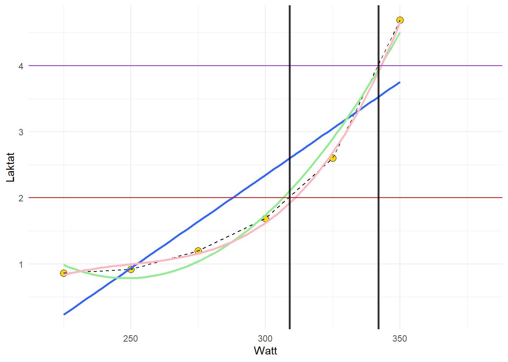

2Assignment 2: Regression models, predicting from data
Author
Ole-Kristian Kjølner, Eskil Strand, Hennie Engebretsen, Ole Conrad Burud
2.1 Introduksjon
En regresjonsmodell er en modell som kvantifiserer forholdet mellom en eller flere uavhengige variabler og en avhengig variabel. Innen medisin er regresjon den analysemtoden som er hyppigst anvendt. Det finnes forskjellige regresjonsmodeller. De vanligste er lineær regresjon, polynominal regresjon og logistisk regresjon. Hva man har av datasett vil bestemme hvilken regresjonsmodell som egner seg best å benytte (Pisică et al. 2022).
En lineær regresjonsmodell er en modell der en kan estimere verdien av en avhengig variabel basert på verdien av andre kjente uavhengige variabler (Pisică et al. 2022). I en slik modell benyttes en rett linje for å lage en modell som beskriver dataen. Følgende funksjon benyttes for å skape det lineære plottet:
yi = b0 + b1xi + ei
der yi er den avhengige variabelen som kan estimeres ved å benytte de uavhengige variablene b1xi og b0. b0 er skjæringspunktet til grafen og b1 er stigningstallet til grafen.
2.2 Part 1 - Lactate thresholds
2.2.1 Metode
Dataene ble sortert i mer passende format (tidydata) for å gjøre det lettere med modellene våre senere. Deretter ble det gjort ulike regresjonsmodeller for å fremstille dataene våre. Nye skjæringspunkter ble tegnet for å illustrere treningsintensitet ved ulike laktatverdier.
2.2.2 Resultat
Code
library(readxl)library(tidyr)library(exscidata)library(tidyverse)library(ggplot2)library(dplyr)library(magrittr)library(gt)library(ggtext)# Kalkuler treningsintensitet ved 2 og 4 mmol/Lw <- cyclingstudy |>select(subject, group, timepoint, lac.225:lac.375) |>filter(timepoint =="pre", subject ==10) |>pivot_longer(names_to ="watt", values_to ="lac",names_prefix ="lac.", names_transform =list(watt = as.numeric),cols = lac.225:lac.375)mod <-lm(lac ~ watt, data = w)w |>ggplot(aes(watt, lac, group = subject)) +labs(x ="Watt",y ="Laktat") +geom_point(size =3, shape =21, fill ="gold") +geom_line(lty =2) +geom_smooth(method = lm, se =FALSE) +geom_smooth(method = lm, se =FALSE, formula = y ~poly(x, 2), color ="lightgreen") +geom_smooth(method = lm, se =FALSE, formula = y ~poly(x, 3), color ="lightpink") +coord_cartesian(xlim =c(220, 380)) +geom_hline(yintercept =2, color ="red") +geom_hline(yintercept =4, color ="purple") +# Legger inn en vertikal linje, med y = 2mmol, skjæringspunkt 308W, tatt på øyemål.geom_vline(xintercept =309, linewidth =1, alpha =0.8) +# Legger inn en vertikal linje med y = 4mmol, skjæringspunkt 342W, tatt på øyemål.geom_vline(xintercept =342, linewidth =1, alpha =0.8) +theme_minimal()

Figur 1: Gule punkter = laktat og watt, blå linje = lineær regresjon, grønn linje = andregradsligning, rosa = tredjegradsligning.
Vi har valgt å se på subject 10 fra datasettet Cyclingstudy. Vi gjør om datasettet til tidydata. Dette gjør vi for å gi watt og laktat hver sine verdier. Vi plotter inn laktatverdier og wattverdier (gule punkter). Deretter tegner vi en stiplet linje som følger punktene. Vi gjør en regresjonsanalyse, først en lineær modell (blå linje), deretter en andregradsligning (grønn) og til slutt en tredjegradsligning (rosa). Disse bruker vi for å observere hvilken modell som passer best i dette tilfellet.
For å understreke hvor unøyaktig den lineære modellen er i dette tilfellet, kan man på øyemål se at laktaten på 300W viser omtrent 2.4 mmol × L-1. Den faktiske laktaten på 300W er 1.69 mmol × L-1.
2.3 Part 2 - Predicting sizes of DNA fragments
2.3.1 Metode
For å kunne predikere kalibreringskurven til qPCR, er det en rekke prosesser på molekylærlabben som er gjort på forhånd før det kunne kjørers i R-studio.
For å kunne kjøre et PCR på en agrose gel 2%, ble det først tatt helbod fra en forsøksperson for å kunne ha et ekstrahert DNA. Helblodet vært igjen ulike prosesser hvor det er tilsatt ulike løsninger og tilsatt ulike primere. Vi står da igjen med et PCR-produkt. Det har videre blitt kjørt en elektroforese for å kunne separere DNA fragmentene fra PCR reaksjonen. Når elektroforesen var ferdig, ble det tatt et bilde av agrose gel 2%.
Videre har bildet fra elektroforesen blitt analysert ved hjelp av ImageJFiji og videre dataanalyser gjort i R og R studio. PCR-reaksjoner blir bestemt av primerdesign og dens spesifisitet.
2.3.2 Resultat
Code
ladder <-data.frame(dist =c(374.5, 396.5, 423.5, 458.5, 496.5, 547.5,607.5,688.5,734.5,792.5,860.5,936.5,1035.5), mw =c(1000, 900, 800, 700, 600, 500,400, 300, 250, 200, 150, 100, 50))# Create a new data frame of unknownsunknown <-data.frame(dist =c(1208.5, 600.5, 18.5, 383.5, 408.5, 436.5, 470.5, 508.5, 559.5, 618.5, 696.5, 742.5, 798.5, 862.5, 935.5, 993.5))# Fit the modelcal <-lm(log(mw) ~ dist, data = ladder)preds <-exp(predict(cal, newdata = unknown))ladder %>%ggplot(aes(dist, log(mw))) +geom_point() +geom_abline(intercept =coef(cal)[1], slope =coef(cal)[2])
library(exscidata)library(tidyverse)dat <- hypertrophy |>select(GROUP, TRAINING_AGE, AGE, CLUSTER, VL_T2, TESTOSTERONE_T1, TESTOSTERONE_T2)m <-lm(TESTOSTERONE_T1 ~ TRAINING_AGE, dat) dat |>ggplot(aes(TRAINING_AGE, TESTOSTERONE_T1)) +labs(x ="Treningsalder (år)",y =expression(Testosteronverdier ~ ng %.% dl^{-1})) +# use expression for superscriptgeom_point(size =3, shape =21, fill ="orange") +geom_abline(intercept =coef(m)[1], slope =coef(m)[2], color ="steelblue", size =1) +geom_hline(yintercept =coef(m)[1] +coef(m)[2] *10, color ="darkgreen") +geom_vline(xintercept =10, color ="darkred") +scale_y_continuous(breaks =c(200, 354, 400, 600, 800, 1000), labels =c(200, "testo10", 400, 600, 800, 1000)) +theme_bw()
Figur 3: Sammenheng mellom treningsalder og testosteronverdier i blodet
Code
# Den lineære modellen forteller i dette tilfellet at for hvert år man trener, så vil nivå av testosterone synke med 20.51 ng*dl<sup>-1</sup>. I tillegg kan man estimere testonivå etter å ha trent i 10 år. Dette vil vi gjøre med følgende utregning: testo10 <-coef(m)[1] +coef(m)[2] *10testo10rounded <-round(testo10, 2)# testosteronnivå etter 10 år med trening estimeres til 354.26 ng*dl^-1
2.4.3 Diskusjon
Fra datasettet hypertrophy valgte vi å se på sammenhengen mellom testosteronkonsentrasjon i blodet (ng × dl-1) og treningsalder (antall år med trening). Den lineære modellen forteller at testosteronkonsentrasjonen i blodet synker med 20.51 ng × dl-1 for hvert treningsår. Etter 10 år med trening, estimerer den lineære modellen et testosteronnivå på 354.26 ng × dl-1.
Analysen av dataene viser en p-verdi på 0,1779, noe som indikerer at det ikke er statistisk signifikant bevis for en sammenheng mellom treningsalder og nivået av testosteron i blodet. Siden p-verdien er høyere enn det vanlige signifikansnivået på 0,05, kan vi ikke avvise nullhypotesen, som antyder at det ikke er noen betydelig effekt eller sammenheng mellom de to variablene i dette datasettet. Dette betyr at variasjonen i testosteronnivåer ikke ser ut til å være relatert til hvor lenge individene har trent.
I analysen av sammenhengen mellom treningsalder og testosteronnivåer i blodet ses det en t-verdi på 6.250. Den høye t-verdien på 6.250, og en p-verdi på 0,1779. Denne p-verdien er høyere enn det vanlige signifikansnivået på 0,05, noe som betyr at vi ikke har tilstrekkelig statistisk bevis for å avvise nullhypotesen. Selv om t-verdien indikerer en mulig sammenheng mellom treningsalder og testosteronnivå, er det ikke nok evidens til å konkludere med at denne sammenhengen er signifikant. Dermed kan vi konkludere med at selv om det kan være en tendens til en sammenheng mellom treningsalder og testosteronnivåer, er resultatene fra denne analysen ikke sterke nok til å si at treningsalder har en reell effekt på testosteronnivåene i blodet.
2.5 Referanser
Pisică, Dana, Ruben Dammers, Eric Boersma, and Victor Volovici. 2022. “Tenets of Good Practice in Regression Analysis. A Brief Tutorial.”World Neurosurg. 161 (May): 230–239.e6.